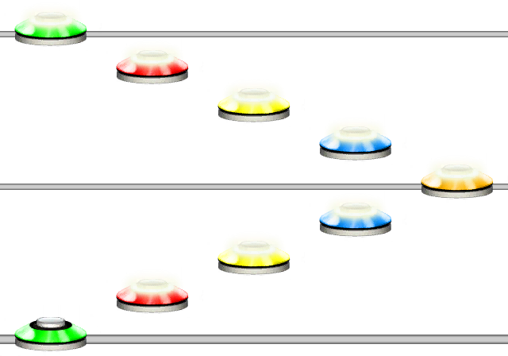
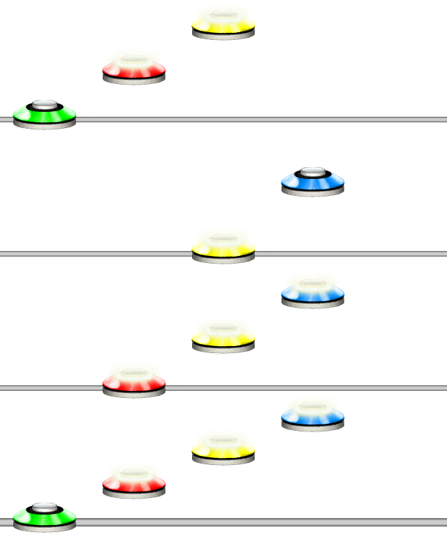
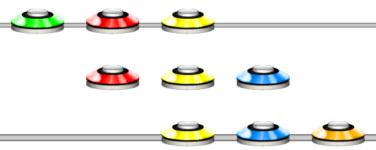
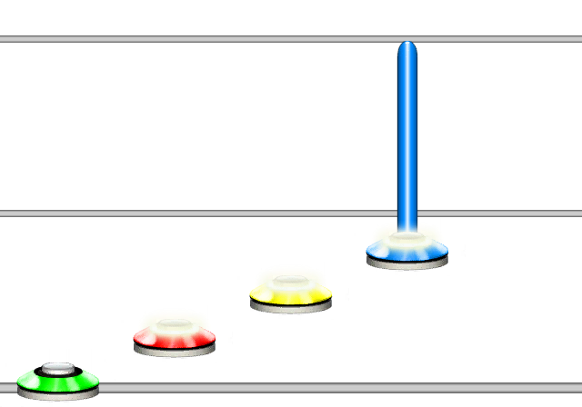
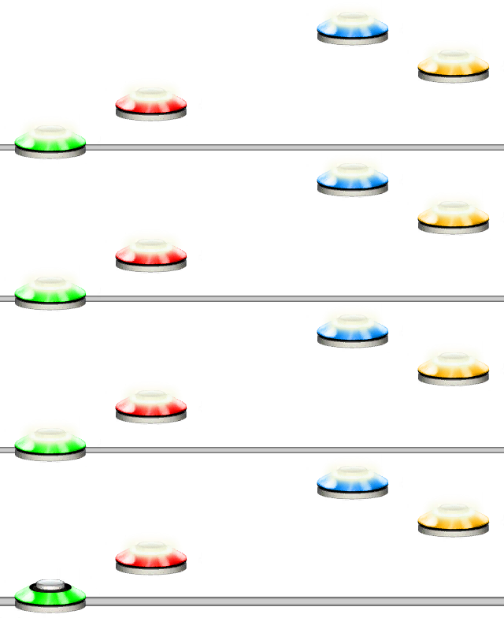

Unilang
Unilang is a scripting language made for Unison. The syntax of this language is quite unique as it is meant for charting.
Basics
Unilang is interpreted from left to right. The language contains short ways to write notes, chords, quantizations and sustains.
Notes
Placing notes is as simple as using numbers and lowercase letters. The input character represents what fret value the note will have.
| Note Value | Result |
|---|---|
| 0 | Open note |
| 1 - 5 | Green to orange |
| 6 - 9 | Extended values above orange |
| a - z | Extended values above the 9th note |
Tip
You can use single quotes ' around a note to write the value too instead of using a-z. Ex. '10' will place note of value 10.
Example 1
123454321
Writing numbers like this in a row will results in each one being treated as a note.
You may notice that, notes become HOPOs after the first note. The reason for this is that the default quantization is set to 1/16.
For more about quantizations, see the Quantization section and Quantization for more.
For more about note placing, see Note
Quantization
Quantization, or the step, can be set by wrapping a number in | bars. The default quantization is 1/16. See Quantization for more.
Example 2
1234|12|234|8|34|12|123
Using different quantizations.
Chords
Placing chords can be achieved by wrapping something in square brackets []. See Chord for more about chords.
Example 3
|8|[345][234][123]
Wrapping something in square brackets will create chords. In this case 3, three note chords.
Sustains and Note Properties
You can set the sustain length and other note properties by putting curly brackets {} after any note.
Example 4
1234{5}5{4,t}
Creates 4 notes where the blue note will have a sustain length of 5 steps, and the orange note a length of 4 and being a tap.
Functions
Unilang comes with a bunch of quality of life functions for writing shorter and more readable Unilang code.
Functions always start with a CAPITAL letter. Check the different function pages for other aliases of the functions. After the first letter, functions are case insensitive.
As an example, that means that the ARPEGGIATOR function can be written as ARPEGGIATOR, Arpeggiator, ArPeGgIaToR, or any other alternative capitalization as long as the first letter is a CAPITAL letter.
Example 5
ARP(1254, 4)
Will arpeggiate the pattern "1254" a total of 4 times.
For more about what the different functions do, check the different pages within this category.
Short-hands For Functions
In Unilang, at the base level, everything is treated as a function. That means that, yes, a note is a function, a quantization is a function, a chord is a function and so on.
In the examples you may have already seen the short-hand versions of some of these functions.
Some Concrete Function vs. Short-hands
| Function Equivalent | Shorthand | See more |
|---|---|---|
NOTE(1) |
1 |
Note |
QUANTIZATION(16) |
|16| |
Quantization |
QUANTIZATION(16, none) |
|16!| |
|
QUANTIZATION(16, backwards) |
|16:| |
|
CHORD(123) |
[123] |
Chord |
NOTE(1)SETPROP(8) |
1{8} |
Set Note Properties |
NOTE(1)SETPROP(8)UNSNAP_SUS() |
1{8}^ |
Unsnap Sustain |
SHORTHAND_CHORD(a) |
.a |
Shorthand Chord |
SHORTQUANT(1) |
;1 |
Shorthand Quantization |
SHORTQUANT(1, none) |
;1! |
|
SHORTQUANT(1, backwards) |
;1: |
|
NOTE(1)JUMP_STEP()NOTE(2) |
1-2 |
Jump Step |
NOTE(1)SNAP_BEAT()NOTE(2) |
1=2 |
Snap Beat |
RANDOM() |
? |
Random |
Other functions do not have short-hands, which means you will have to specify them by name.
Some notable functions you might find useful right away are listed below.
| Function Equivalent | Description | See more |
|---|---|---|
ARP(1234,4) |
Arpeggiates the pattern the given amount of times. | Arpeggiator |
FORCE(1234) |
Forces all the notes in the input pattern. | Force |
HOPO(1234) |
Turns the input pattern into HOPO notes. | HOPO |
STRUM(1234) |
Turns the input pattern into Strum notes. | Strum |
TAP(1234) |
Turns the input pattern into Tap notes. | Tap |
STARPOWER(1234) |
Turns the input pattern into Starpower notes. | Starpower |
For other functions, please refer to their respective pages for more information.